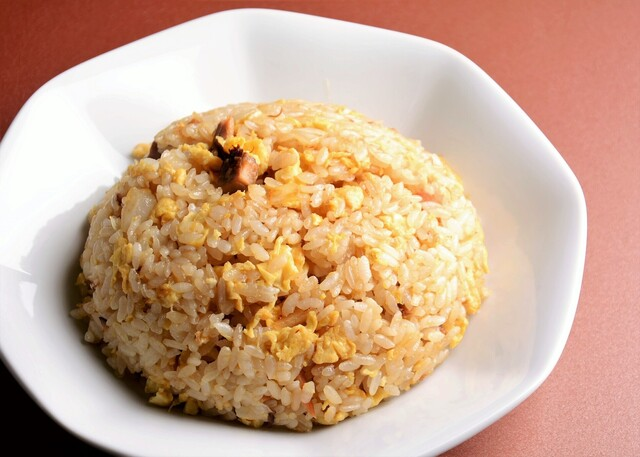
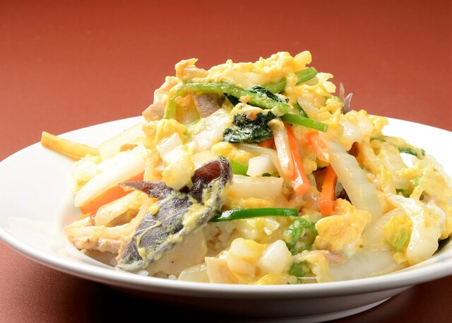
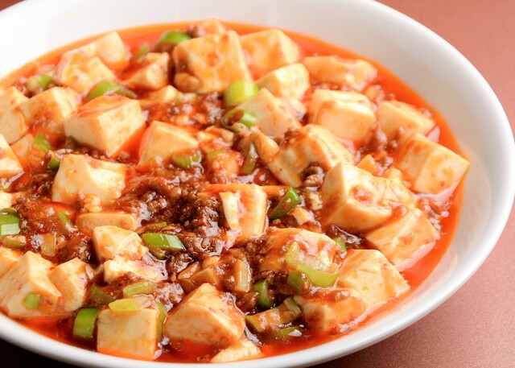
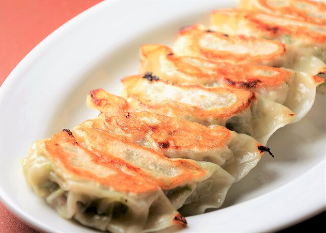
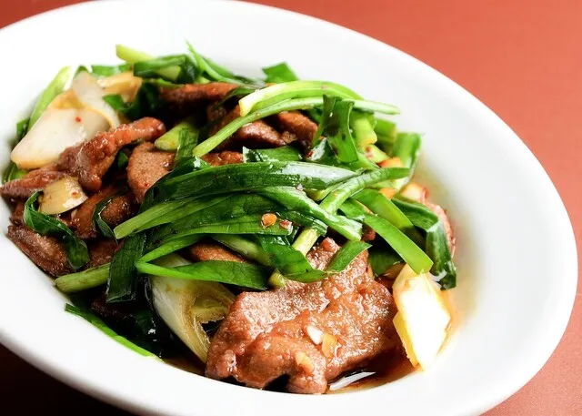
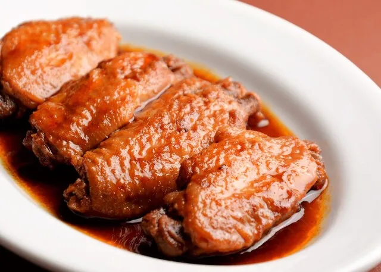
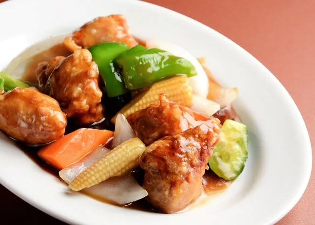
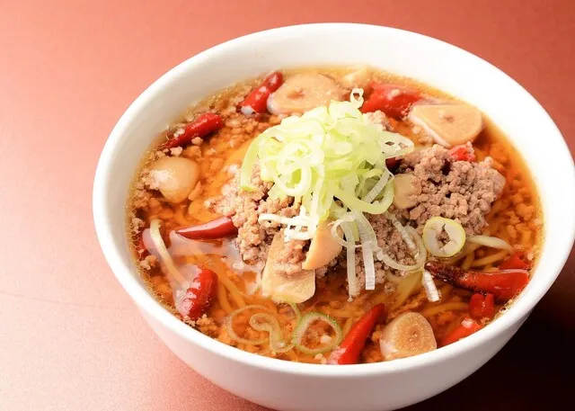
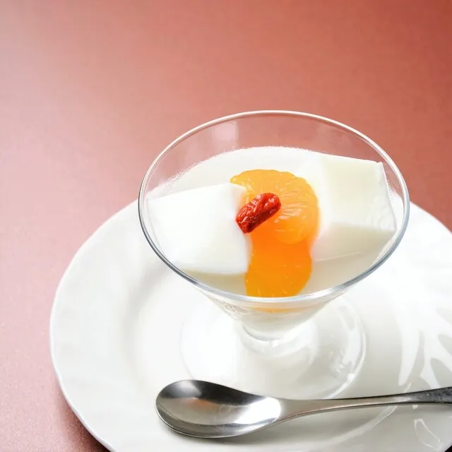

東天紅のメニュー
-

- チャーハン
- 強火で一気に炒め上げ、お米一粒一粒に旨味を閉じ込めた自慢のチャーハンです。
おすすめポイント: 飽きない、何度でも食べたくなる王道の味わい。
-

- 東天飯（とうてんはん）
- お店の名前を冠したオリジナル看板メニュー。白菜やニラ、人参、きくらげなどのたっぷりの野菜と豚肉をふんわり卵でとじ、ご飯の上に豪快にのせた優しい塩味の中華飯です。
おすすめポイント: シャキシャキ野菜とふわふわ卵の絶妙な一体感で箸が止まらない一杯。
-

- 麻婆豆腐
- 山椒のしびれる辛さと、ひき肉のコク深い旨みが豆腐に絡む、中華料理の王道おかずです。白米が驚くほど進む濃厚な味わいで、食卓を一気に華やかに彩ります。
おすすめポイント: 旨味が凝縮されたジューシーな挽肉。
-

- 餃子
- パリッと香ばしい黄金色の焼き目と、モチモチの皮が絶妙な焼き餃子。ひとくち噛めば、中からジューシーな肉汁と野菜の旨味がじゅわっと広がります。
おすすめポイント: お酒もご飯も止まらなくなる主役級の味わい。
-

- ニラレバ炒め
- 新鮮でコクのあるレバーと、シャキシャキとしたニラの食感が絶妙にマッチした一品。特製の甘辛いタレが素材の旨味を引き立てます。
おすすめポイント: ご飯が進む甘辛い味付け。
-

- 鶏手羽先の煮込み
- じっくりと時間をかけて甘辛い醤油ベースのタレで煮込んだ手羽先。骨からホロリと外れるほど柔らかいお肉に、濃厚な旨味が中までしっかりと染み込んでいます。
おすすめポイント: 骨まで柔らかく煮込み甘辛ダレが中までしみ込んだ一品。
-

- 酢豚
- カリッと揚げたジューシーな豚肉と、彩り豊かな野菜に特製の甘酢あんをたっぷり絡めました。爽やかな酸味とコクのある甘みの絶妙なバランスが食欲をそそる一品です。
おすすめポイント: ヤングコーンのシャキシャキ食感と甘酢が相性抜群です。
-

- 台湾ラーメン
- ピリッと辛い台湾ミンチに、ニンニクの旨味と唐辛子の辛さが絶妙に絡み合う一杯。鶏ガラベースのすっきりとした醤油スープが、コク深い辛旨さを引き立てます。
おすすめポイント: ゴロゴロ入ったニンニクとひき肉のパンチが効いた、一度食べたらクセになるスタミナ満点の味わい。
-

- 杏仁豆腐
- なめらかな口当たりと爽やかな甘みが特徴の伝統的な中華デザート。つるんとした食感の杏仁豆腐に、みかんの酸味とクコの実の彩りを添え、食後のお口直しにぴったりな一品に仕上げました。
おすすめポイント: 食後の余韻をさっぱりと締めくくる王道のデザート。